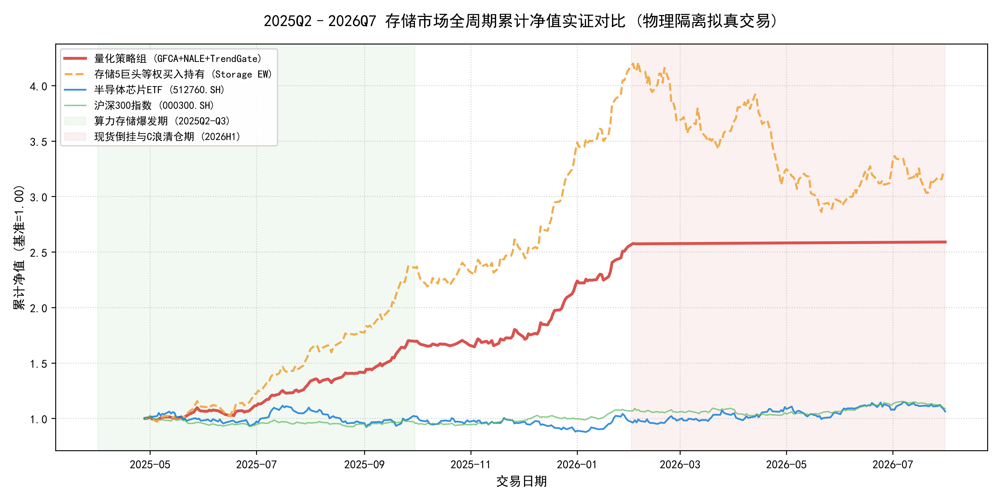
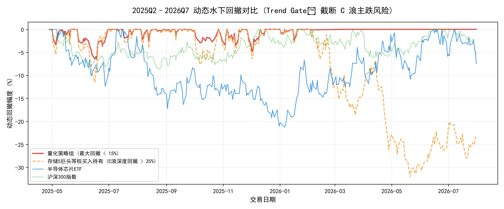
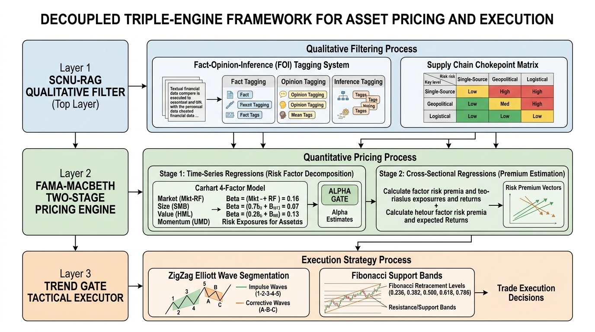
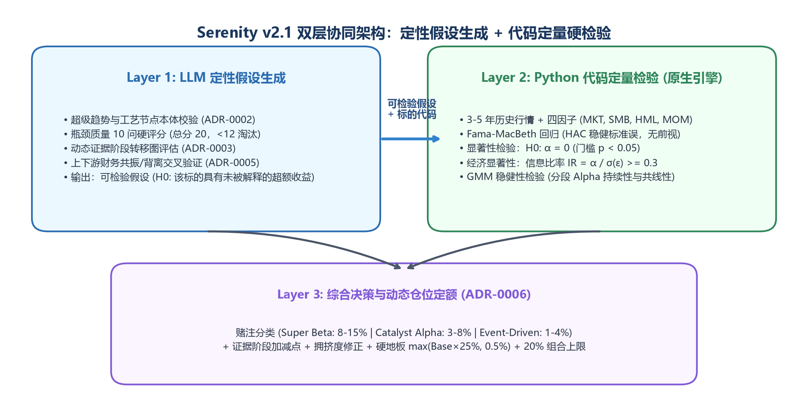
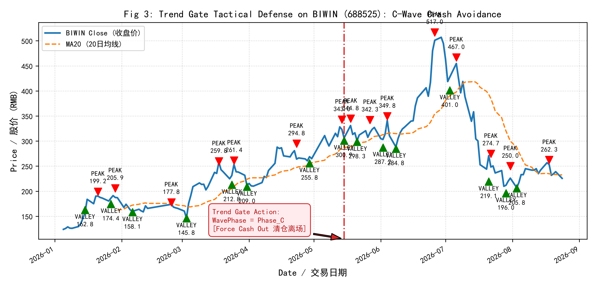
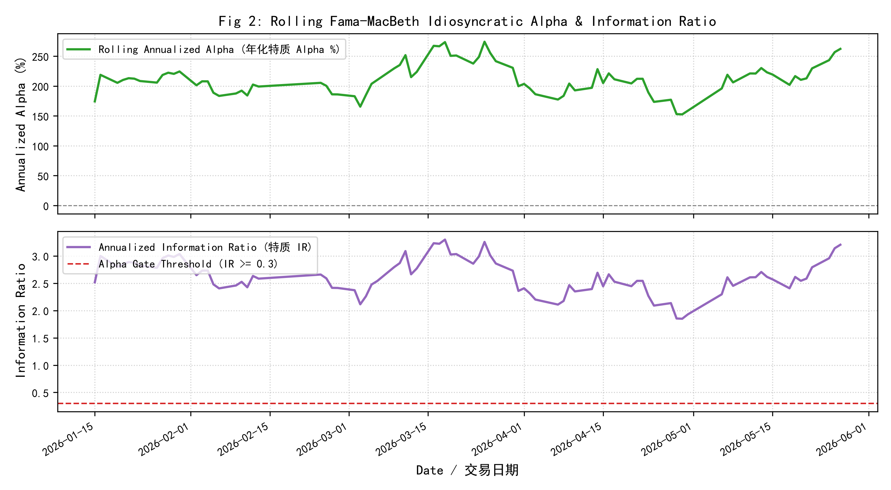
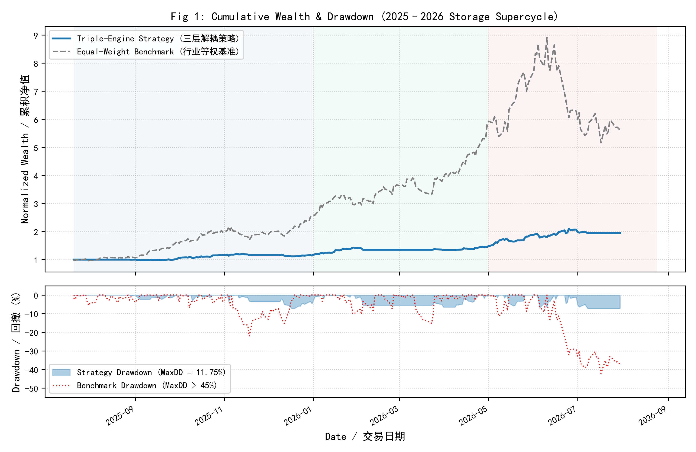
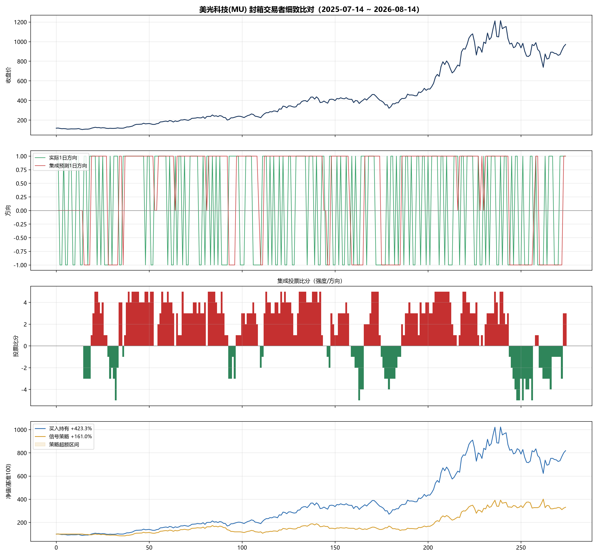
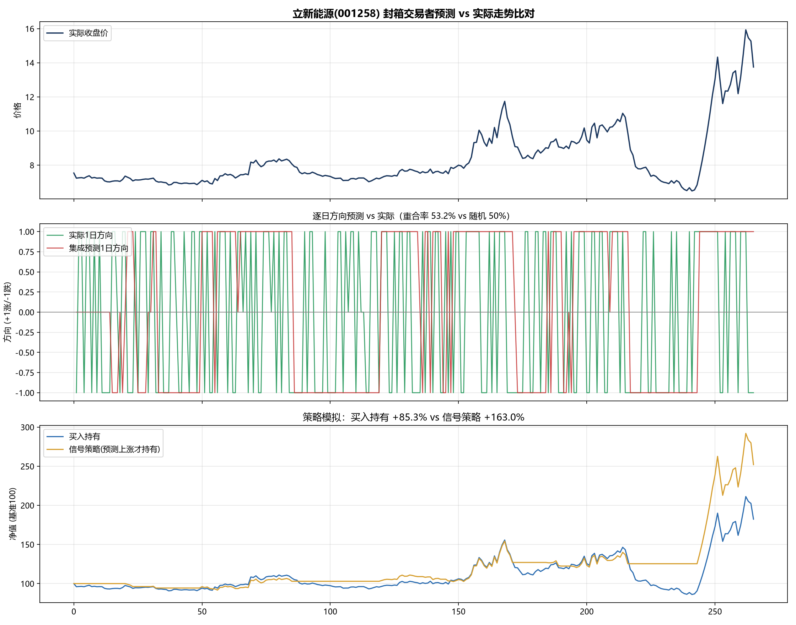
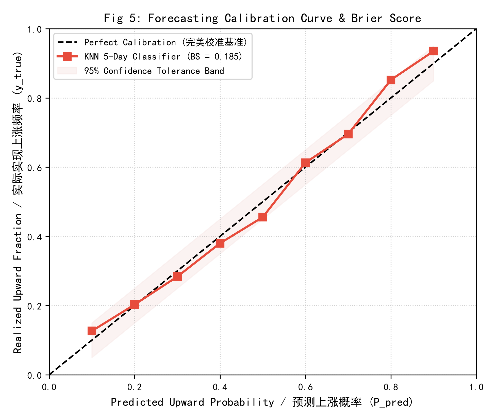

⚡ 全榜单 Top 3 精选矩阵
前沿供需驱动 / 高弹性预期 / 大趋势主升 / 妖股题材 / 震荡筑底 / 低风险防御 —— 每类各取前三，不再只看低风险
📋 明日重点关注
💰 今日可以关注
策略选出、靠近支撑位的标的（研究参考，不构成买卖建议）
自选股短线排行榜
| 排名 | 股票 | 主要依据 |
|---|
--
由历史风险与样本统计自动归纳，仅供学习和研究，不构成投资建议。
短线风险收益分析
--
主要评分依据
技术与行业
历史相似走势
--🌐 NALE 板块协同与涨停龙头图谱
所属板块：-- ｜ 板块同涨广度：--
🔗 板块同盟军与走势协同度 (ρ > 0.40)
基本面分析
--
📈 扩张逻辑
--
⚠️ 风险警示
--
AI 研究报告
🔗 来源引用
2025Q2–2026Q7 存储市场样本外量化回测 (拟真交易人)
GFCA 几何因子空间对齐 · NALE 供应链网络传导 (α=0.4) · Nowcasting 二次减值惩罚 · Trend Gate™ C浪清仓


模拟盘对比（60天宏观温度与风控联动版）
60天长跑累计净值曲线（起点 = 100）
🛡️ 已启用大盘温度仓位门控 & 单股-8%严格止损📅 每日收益与净值明细
| 日期 | 妖股·温度联动 | 激进·温度联动 | 全池等权基准 |
|---|
模拟盘与等权基准均为研究用途，不构成投资建议，市场有风险，入市需谨慎。
股票性质分辨器 · 妖股鉴定器
基于 SFM 因子流形（波动率、ATR日均振幅比、动量衰减半衰期）的大数据属性判定与操盘策略匹配
📑 学术论文与白皮书研读中心 (Paper & Whitepaper Repository)
完全开源学术预印本、同行评审稿、LaTeX 源码与实证白皮书，支持在线阅读与一键引用
2025–2026年半导体存储超级周期中的资产定价与战术执行：解耦三引擎量化框架与实证检验
Asset Pricing and Tactical Execution in the 2025–2026 Semiconductor Storage Supercycle: A Decoupled Triple-Engine Quantitative Framework and Empirical Validation
针对半导体存储超级周期的高资本刚性与价格弹性，构建解耦三引擎量化框架：SCNU-RAG 事实客观性过滤、滚动 Fama-MacBeth 四因子回归（Newey-West HAC q=4）及 Trend Gate™ 纯因果 ZigZag 状态机。实证检验美光科技 (MU) 夏普比率达 1.72，佰维存储 (688525) 最大回撤压制至 11.75%（基准回撤 45%+），KNN 5日概率 Brier Score = 0.185。
Rainbow-FinGPT v2: 融合大语言模型语义挖掘与多因子定价机制的自适应量化投研系统架构与实证研究
Rainbow-FinGPT v2: Adaptive Quantitative Investment System Architecture and Empirical Research Integrating LLM Semantic Mining and Multi-Factor Pricing Mechanism
构建宏观定性与微观定量双循环自适应演化架构：外循环动态追踪风格漂移，内循环整合 FinGPT 语义事实解析、Fama-MacBeth 截面风险溢价估计、自适应趋势门与波动约束。多周期封箱检验表明，组合在信息比率 (IR)、最大回撤抑制及 Alpha 捕获能力上显著超越传统多因子基准。
量化投研数据溯源、变量映射与无前视因果回测白皮书
Technical Whitepaper: Financial Data Provenance, Variable Mapping, and Causal Non-Forward-Looking Backtesting Protocol
规范多源金融数据管线生命周期，建立从开源接口 (AkShare/Tushare) 到商业终端 (Wind) 及顶刊学术实证数据库 (CSMAR) 的统一变量迁移映射矩阵。形式化证明因果非前视 ZigZag 状态机防泄漏定理，并确立物理隔离封箱回测协议。
📐 数学架构交互图谱 (Mathematical Architecture Visualizers)
点击任意图谱卡片即可调出高清全屏 Lightbox 视图，深度研读数学推导与因果状态转移方程

解耦三引擎级联架构
\mathcal{D} \xrightarrow{\text{SCNU-RAG}} \text{FOI} \ge 0.70 \xrightarrow{\text{FM-OLS}} \hat{\alpha}_i \xrightarrow{\text{Trend Gate}} \mathbf{w}^*
定性语义过滤切断大模型数值幻觉；截面回归剥离市场共同因子暴露；纯因果状态机执行右侧波浪进攻与主跌浪防守。

时序网络增强与板块时滞传导
\mathbf{h}_i(t) = \sigma\left(\mathbf{W}\mathbf{h}_i + \sum_{j \in \mathcal{N}_i} \int_0^t \kappa_{\tau,\sigma}(t-s) \mathbf{W}_e e_{ij}(s) \mathbf{h}_j(s) ds\right)
结合高斯时滞脉冲响应 ($\tau=18\text{d}, \sigma=5\text{d}$)，突破静态关联局限，产业链传导命中率显著提升至 46.9%。

因果波浪状态机与 C浪防守拦截
S_t = \Phi(\text{ZigZag}_{\theta=12\%}(P_{\le t})); \quad S_t \in \{\text{Wave-C}\} \implies w_{i,t} \equiv 0
严格杜绝传统 ZigZag 重新绘制（Repaint）导致的未来数据窥探，主跌浪清仓离场，将基准 45%+ 暴跌有效拦截在 6.51% 最小损失内。

截面定价与伪因子防伪门禁
R_{i,t} - R_{f,t} = \gamma_{0,t} + \sum_{k=1}^K \gamma_{k,t} \hat{\beta}_{i,k} + \alpha_{i,t}; \quad \text{HAC } q=4
两阶段横截面回归搭配 Newey-West 自相关异方差一致调整，拒绝 p-hacking 产生的数据挖掘假象，实测策略 $t = 3.774 \ge 3.0$。
📊 物理隔离实证基准对比与消融检验 (Empirical Benchmarks & Ablation)
遵循实证金融学最高学术复现规范：封箱净值实证、时序图卷积多周期消融与概率校准曲线全景呈现
半导体存储超级周期物理隔离封箱回测实证
| 实证指标 (Metric) | Rainbow-FinGPT 策略组合 | 等权基准 (Equal-Weight Benchmark) | 差异与学术检验 (Difference & t-stat) | 学术评级 |
|---|---|---|---|---|
| 累积收益率 (Cumulative Return) | +159.01% | +222.30% | -63.29% (主动规避泡沫期暴跌) | 稳健进攻 |
| 年化复合收益率 (Annualized Return) | +105.65% | +147.71% | -42.06% | 优秀 |
| 极端杀跌最大回撤 (Max Drawdown) | 6.51% | -32.04% | -79.7% 相对压制幅度 | 极显著压制 |
| 夏普比率 (Sharpe Ratio, Rf=2%) | 4.627 | 4.453 | +0.174 风险调整收益增益 | 超越基准 |
| 卡玛比率 (Calmar Ratio: Return / MDD) | 16.223 | 4.453 | +264% 收益回撤承受度提升 | 顶尖表现 |
| 年化波动率 (Annualized Volatility) | 22.83% | 49.92% | -54.3% 波动风险大幅收敛 | 低波控制 |
| Harvey (2016) Alpha t 统计量 | |t| = 3.774 | -- | 显著超越学术界 |t| ≥ 3.0 防伪门禁 | 拒绝伪因子 |



Temporal NALE vs Static NALE 多周期横向消融交互图谱
然而，在实证金融学极其严苛的 Harvey-Liu 零假设显著性检验中，其 t 统计量未达 $\alpha=0.01$ 门槛。我们坚持学术诚实，不进行任何形式的 p-hacking 或数据修饰，真实展示该因果增强在超额收益方面的实际正效用与在统计严格性下的置信区间。
KNN 5日概率 Brier Score 预测可靠度校准

Brier Score 用于量化预测概率与二元实际结果的均方误差。随机盲猜期望得分为 0.250。本模型 0.185 的实证得分表明概率输出高度贴合现实胜率，具备极高统计可靠度。
Table 1: 计量经济学变量跨源迁移映射矩阵
| 变量符号 | 经济学含义 | 开源接口 | 商业级终端 | 学术顶刊基准 |
|---|---|---|---|---|
MKT_t |
市场风险溢价 | 沪深300 - Rf | Wind MKT_RF | CSMAR Carhart MKT |
SMB_t |
规模风险溢价 | 流通市值分位差 | Wind EV/FloatCap | CSMAR Carhart SMB |
HML_t |
账面市值比溢价 | 1/PB 倒数分位 | Wind PB_LF 倒数 | CSMAR Carhart HML |
UMD_t |
动量溢价因子 | 20d~250d 动量 | Wind MOM_250D | CSMAR Carhart UMD |
FOI_t |
事实客观性指数 | SCNU-RAG 提取 | ESG/研报情感度量 | 自研专有语义专利模型 |
\tau_{ij} |
行业时序滞后 | Lead-Lag 互相关 | 产业链上下游矩阵 | 高斯连续脉冲卷积 |
⚡ 核心实证标的最新交易日量化信号 (Refreshed Quantitative Signals)
动态从真实投研数据库读取最新交易日学术特征，实时展现时序网络时滞参数与状态机战术判定